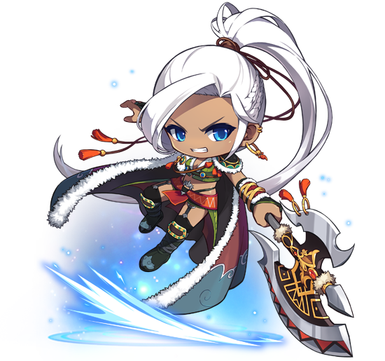

전사 영웅
아란
수백 년 전 메이플 월드를 파멸 직전까지 내몰았던 검은 마법사를 봉인한 6명의 영웅 중 한 명으로, 영웅 캐릭터 중에서 최초로 등장했다.
거대한 폴암 마하를 사용하며, 전투 중 부상을 했음에도 불구하고
검은 마법사의 군대와 수하들을 혼자 상대하며 다른 영웅들이 검은 마법사를 봉인할 수 있게 도왔으나
봉인 직전 검은 마법사가 영웅들에게 내린 저주로 수백 년 동안 얼음 속에 갇힌 채 깊은 잠에 빠지게 된다.
수백 년이 지나 저주가 풀린 아란은 리엔에서 눈을 뜬다.
저주로 인해 영웅 중 유일하게 모든 기억을 잃었으나, 폴암의 정령 '마하'와 평생 아란의 부활을 기다려왔던 '리린',
그리고 검은 마법사와의 전투 전부터 안면이 있었던 '헬레나'의 도움으로 점차 기억을 되찾으며,
동료 영웅들과 함께 검은 마법사를 부활시키려는 조직 '블랙윙'을 저지하려는 메이플 연합에 가입하게 된다.
